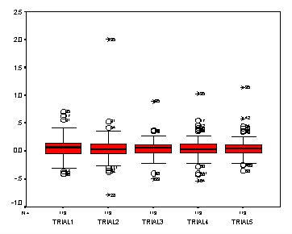
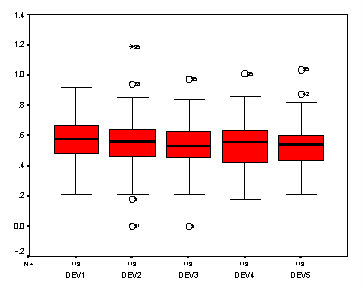
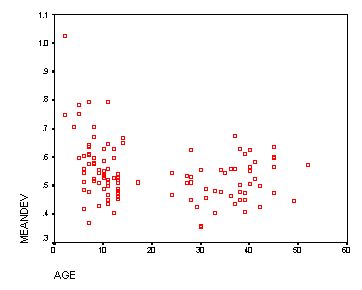

| / Home |
Keywords: repeated measures, two-way analysis of variance, non-parametric regression
"Discovery Day" is a day set aside by the United States Naval Postgraduate School in Monterey, California, to invite the general public into its laboratories. On Discovery Day, 21 October 1995, data on reaction time and hand-eye coordination were collected on 118 people who visited the Human Systems Integration Laboratory. The age of sex of the subject were also recorded. Visitors were mostly in family groups.
Anticipatory timing was evaluated by a Bassin Timer, a device that measure an individual's ability to estimate the speed of a moving light and anticipate its arrival at a designated point. The Bassin timer is a ten foot long row of lights that is controlled by a variable speed potentiometer. In the experiment, the sequence of lights traveled down the track at a rate of five miles per hour. The subject was instructed to anticipate the arrival of the light at the end of the track and swing a plastic bat across a light beam which was aligned with the end of the track to record his or her time. An automatic timing device measured the difference between the time of arrival of the light and the time the light beam was broken. A negative sign denoted that the bat broke the light beam before the light actually arrived, and a positive sign denoted the bat broke the light beam after the light arrived. Five trials were administered to each of 113 subjects.
| Variable | Description | ||
| Sex | Male (M) or female (F) | ||
| Age | Age of subject in years | ||
| Trial1 | Time for 1st trial | ||
| Trial2 | Time for 2nd trial | ||
| Trial3 | Time for 3rd trial | ||
| Trial4 | Time for 4th trial | ||
| Trial5 | Time for 5th trial | ||
Data File (tab-delimited text file)
Data courtesy of Captain Frank Petho, Department of Operations Research, Naval Postgraduate School.
One could use this as an example of two-way analysis of variance and interaction by grouping age into categories and predicting the mean time for the five trials. Alternatively it could be treated as a repeated measures experiment, and the learning pattern investigated.
Subjects do not seem to be biased early or late in their anticipations:

Of interest here is the accuracy of the anticipation. The deviations are DEV1 = ABS(TRIAL1)**(1/4) etc which are approximately symmetric. There is little discernible reduction in deviation as the trials progress.

There is an effect for age in that subjects less than about 12 years old do not do so well on average:

|
Home - About Us -
Contact Us Copyright © Gordon Smyth |